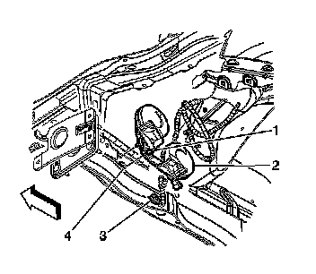

Horn: Service and Repair
Horn Replacement
Removal Procedure
1. Raise and support the vehicle. Refer to Lifting and Jacking the Vehicle (Service and Repair) .
2. Remove the lower air deflector. Refer to Front Air Deflector Replacement (Service and Repair) .

3. Loosen the bolt (1) that secures the horn assembly (2) to the body 4 full turns.
4. Grasp the horn assembly (2) on both sides and rock it back and forth in order to pull it forward on the stud.
5. Slide the horn assembly (2) rearward in order to locate the stud in the large portion of the keyhole slot (4).
6. Disconnect the horn electrical connector (3) from the horn assembly (2).
7. Pull the horn assembly (2) outward in order to remove it from the vehicle.
Installation Procedure
1. Connect the horn electrical connector (3) to the horn assembly (2).
2. Install the stud of the horn assembly (2) into the large portion of the keyhole slot (4).
3. Slide the horn assembly (2) forward in the keyhole slot (4).
Notice: Refer to Fastener Notice (Fastener Notice) .
4. Tighten the bolt (1) in order to secure the horn assembly (2) to the body side rail.
Tighten the bolt to 9 N.m (80 lb in).
5. Install the lower air deflector. Refer to Front Air Deflector Replacement (Service and Repair) .
6. Lower the vehicle.